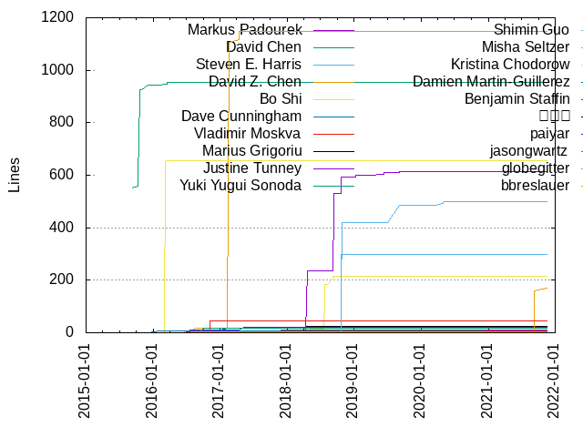
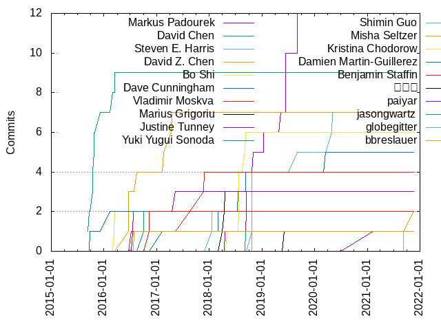
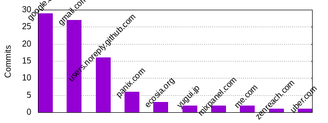

Authors
| Author |
Commits (%) |
+ lines |
- lines |
First commit |
Last commit |
Age |
Active days |
# by commits |
| Markus Padourek |
12 (12.24%) |
615 |
370 |
2018-04-20 |
2019-09-04 |
501 days, 13:17:16 |
8 |
1 |
| David Chen |
9 (9.18%) |
953 |
137 |
2015-09-11 |
2016-03-16 |
186 days, 12:57:32 |
8 |
2 |
| Steven E. Harris |
7 (7.14%) |
498 |
317 |
2018-10-20 |
2020-05-05 |
562 days, 9:34:44 |
7 |
3 |
| David Z. Chen |
7 (7.14%) |
1149 |
35 |
2016-06-20 |
2017-04-13 |
297 days, 10:30:16 |
4 |
4 |
| Bo Shi |
6 (6.12%) |
214 |
86 |
2018-05-07 |
2018-09-07 |
122 days, 22:36:40 |
4 |
5 |
| Dave Cunningham |
5 (5.10%) |
23 |
20 |
2017-02-08 |
2020-03-18 |
1133 days, 14:15:54 |
5 |
6 |
| Vladimir Moskva |
4 (4.08%) |
9 |
9 |
2016-11-07 |
2017-11-29 |
386 days, 17:04:38 |
4 |
7 |
| Marius Grigoriu |
3 (3.06%) |
26 |
11 |
2018-03-29 |
2018-04-19 |
20 days, 19:13:53 |
3 |
8 |
| Justine Tunney |
3 (3.06%) |
22 |
9 |
2016-07-18 |
2017-05-12 |
297 days, 11:32:43 |
3 |
9 |
| Yuki Yugui Sonoda |
2 (2.04%) |
16 |
16 |
2016-09-30 |
2016-09-30 |
0:00:18 |
1 |
10 |
| Shimin Guo |
2 (2.04%) |
5 |
5 |
2018-01-17 |
2018-01-17 |
0:33:59 |
1 |
11 |
| Misha Seltzer |
2 (2.04%) |
170 |
17 |
2021-09-09 |
2021-11-19 |
71 days, 5:14:38 |
2 |
12 |
| Kristina Chodorow |
2 (2.04%) |
656 |
19 |
2016-03-09 |
2016-03-16 |
6 days, 21:29:17 |
2 |
13 |
| Damien Martin-Guillerez |
2 (2.04%) |
6 |
6 |
2015-09-25 |
2016-02-09 |
136 days, 22:50:26 |
2 |
14 |
| Benjamin Staffin |
2 (2.04%) |
45 |
35 |
2016-07-06 |
2016-11-07 |
124 days, 9:20:17 |
2 |
15 |
| 吴少青 |
1 (1.02%) |
5 |
7 |
2019-06-03 |
2019-06-03 |
0:00:00 |
1 |
16 |
| paiyar |
1 (1.02%) |
6 |
5 |
2021-02-12 |
2021-02-12 |
0:00:00 |
1 |
17 |
| jasongwartz |
1 (1.02%) |
4 |
4 |
2018-07-25 |
2018-07-25 |
0:00:00 |
1 |
18 |
| globegitter |
1 (1.02%) |
299 |
63 |
2018-10-23 |
2018-10-23 |
0:00:00 |
1 |
19 |
| bbreslauer |
1 (1.02%) |
2 |
2 |
2016-07-28 |
2016-07-28 |
0:00:00 |
1 |
20 |
These didn't make it to the top: Yaron de Leeuw, Tobias Werth, Sam
Schlegel, Renovate Bot, Philipp Wollermann, Peter van Zetten, Nicolas
Lopez, Mattias Granlund, Marko Mikulicic, Laurent Le Brun, Lance Austin,
Jonathon Belotti, James Judd, Jakob Buchgraber, Ivo List, Greg Estren,
Googler, Globegitter, Fajran Iman Rusadi, Doug Muir, Dmitry Lomov, Daniel
Wagner-Hall, Daniel Compton, Chloe Calvarin, Alex Eagle

Only top 20 authors shown

Only top 20 authors shown
| Month |
Author |
Commits (%) |
Next top 5 |
Number of authors |
| 2021-11 |
Misha Seltzer |
1 (33.33% of 3) |
Ivo List, Daniel Wagner-Hall |
3 |
| 2021-09 |
Philipp Wollermann |
1 (33.33% of 3) |
Misha Seltzer, Alex Eagle |
3 |
| 2021-02 |
paiyar |
1 (100.00% of 1) |
|
1 |
| 2020-06 |
Lance Austin |
1 (100.00% of 1) |
|
1 |
| 2020-05 |
Steven E. Harris |
1 (100.00% of 1) |
|
1 |
| 2020-04 |
Steven E. Harris |
1 (100.00% of 1) |
|
1 |
| 2020-03 |
Marko Mikulicic |
1 (50.00% of 2) |
Dave Cunningham |
2 |
| 2019-11 |
Jonathon Belotti |
1 (100.00% of 1) |
|
1 |
| 2019-09 |
Markus Padourek |
2 (66.67% of 3) |
Steven E. Harris |
2 |
| 2019-07 |
Peter van Zetten |
1 (100.00% of 1) |
|
1 |
| 2019-06 |
Markus Padourek |
3 (60.00% of 5) |
吴少青, Sam Schlegel |
3 |
| 2019-05 |
Yaron de Leeuw |
1 (50.00% of 2) |
Markus Padourek |
2 |
| 2019-04 |
Nicolas Lopez |
1 (100.00% of 1) |
|
1 |
| 2019-02 |
Renovate Bot |
1 (50.00% of 2) |
Dmitry Lomov |
2 |
| 2019-01 |
Markus Padourek |
1 (33.33% of 3) |
Laurent Le Brun, Daniel Compton |
3 |
| 2018-11 |
Tobias Werth |
1 (50.00% of 2) |
Markus Padourek |
2 |
| 2018-10 |
Steven E. Harris |
4 (66.67% of 6) |
globegitter, Markus Padourek |
3 |
| 2018-09 |
Markus Padourek |
2 (28.57% of 7) |
Bo Shi, Mattias Granlund, James Judd, Dave Cunningham |
5 |
| 2018-08 |
Chloe Calvarin |
1 (100.00% of 1) |
|
1 |
| 2018-07 |
Bo Shi |
3 (42.86% of 7) |
jasongwartz, Greg Estren, Globegitter, Dave Cunningham |
5 |
| 2018-05 |
Fajran Iman Rusadi |
1 (50.00% of 2) |
Bo Shi |
2 |
| 2018-04 |
Marius Grigoriu |
2 (66.67% of 3) |
Markus Padourek |
2 |
| 2018-03 |
Marius Grigoriu |
1 (33.33% of 3) |
Doug Muir, Dave Cunningham |
3 |
| 2018-02 |
Jakob Buchgraber |
1 (100.00% of 1) |
|
1 |
| 2018-01 |
Shimin Guo |
2 (100.00% of 2) |
|
1 |
| 2017-11 |
Vladimir Moskva |
2 (100.00% of 2) |
|
1 |
| 2017-08 |
Vladimir Moskva |
1 (100.00% of 1) |
|
1 |
| 2017-05 |
Justine Tunney |
1 (100.00% of 1) |
|
1 |
| 2017-04 |
David Z. Chen |
2 (100.00% of 2) |
|
1 |
| 2017-02 |
David Z. Chen |
1 (50.00% of 2) |
Dave Cunningham |
2 |
| 2016-11 |
Vladimir Moskva |
1 (50.00% of 2) |
Benjamin Staffin |
2 |
| 2016-09 |
Yuki Yugui Sonoda |
2 (100.00% of 2) |
|
1 |
| 2016-08 |
David Z. Chen |
1 (100.00% of 1) |
|
1 |
| 2016-07 |
Justine Tunney |
2 (50.00% of 4) |
bbreslauer, Benjamin Staffin |
3 |
| 2016-06 |
David Z. Chen |
3 (100.00% of 3) |
|
1 |
| 2016-03 |
Kristina Chodorow |
2 (50.00% of 4) |
David Chen |
2 |
| 2016-02 |
Damien Martin-Guillerez |
1 (100.00% of 1) |
|
1 |
| 2015-12 |
David Chen |
1 (100.00% of 1) |
|
1 |
| 2015-10 |
David Chen |
4 (80.00% of 5) |
Googler |
2 |
| 2015-09 |
David Chen |
2 (66.67% of 3) |
Damien Martin-Guillerez |
2 |
| Year |
Author |
Commits (%) |
Next top 5 |
Number of authors |
| 2021 |
Misha Seltzer |
2 (28.57% of 7) |
paiyar, Philipp Wollermann, Ivo List, Daniel Wagner-Hall, Alex Eagle
|
6 |
| 2020 |
Steven E. Harris |
2 (40.00% of 5) |
Marko Mikulicic, Lance Austin, Dave Cunningham |
4 |
| 2019 |
Markus Padourek |
7 (38.89% of 18) |
吴少青, Yaron de Leeuw, Steven E. Harris, Sam Schlegel, Renovate Bot
|
12 |
| 2018 |
Bo Shi |
6 (17.65% of 34) |
Markus Padourek, Steven E. Harris, Marius Grigoriu, Dave Cunningham,
Shimin Guo
|
17 |
| 2017 |
Vladimir Moskva |
3 (37.50% of 8) |
David Z. Chen, Justine Tunney, Dave Cunningham |
4 |
| 2016 |
David Z. Chen |
4 (23.53% of 17) |
Yuki Yugui Sonoda, Kristina Chodorow, Justine Tunney, David Chen,
Benjamin Staffin
|
9 |
| 2015 |
David Chen |
7 (77.78% of 9) |
Googler, Damien Martin-Guillerez |
3 |
| Domains |
Total (%) |
| google.com |
29 (29.59%) |
| gmail.com |
27 (27.55%) |
| users.noreply.github.com |
16 (16.33%) |
| panix.com |
6 (6.12%) |
| ecosia.org |
3 (3.06%) |
| yugui.jp |
2 (2.04%) |
| mixpanel.com |
2 (2.04%) |
| me.com |
2 (2.04%) |
| zenreach.com |
1 (1.02%) |
| uber.com |
1 (1.02%) |
